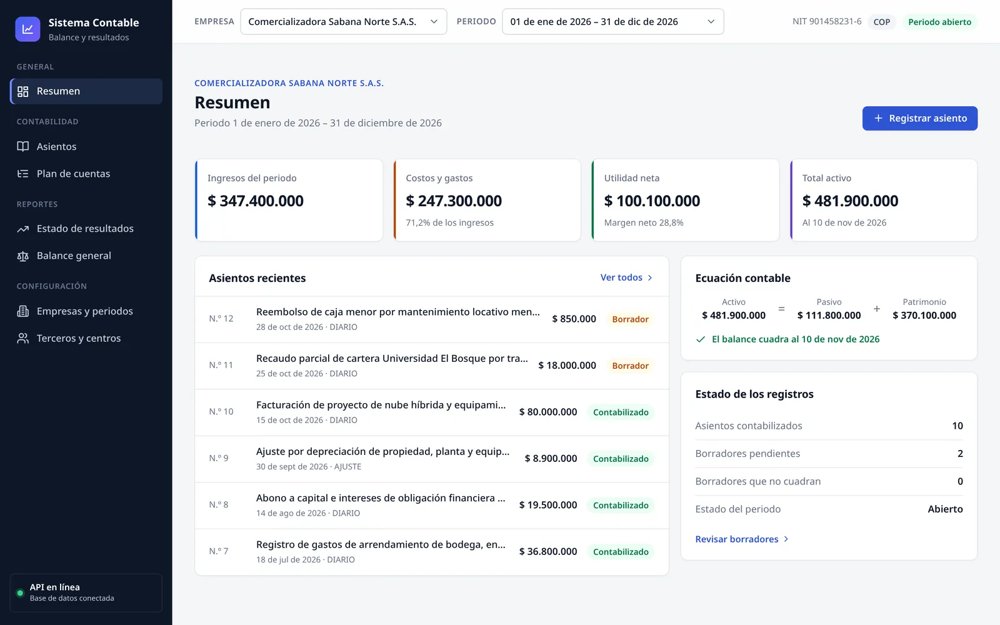
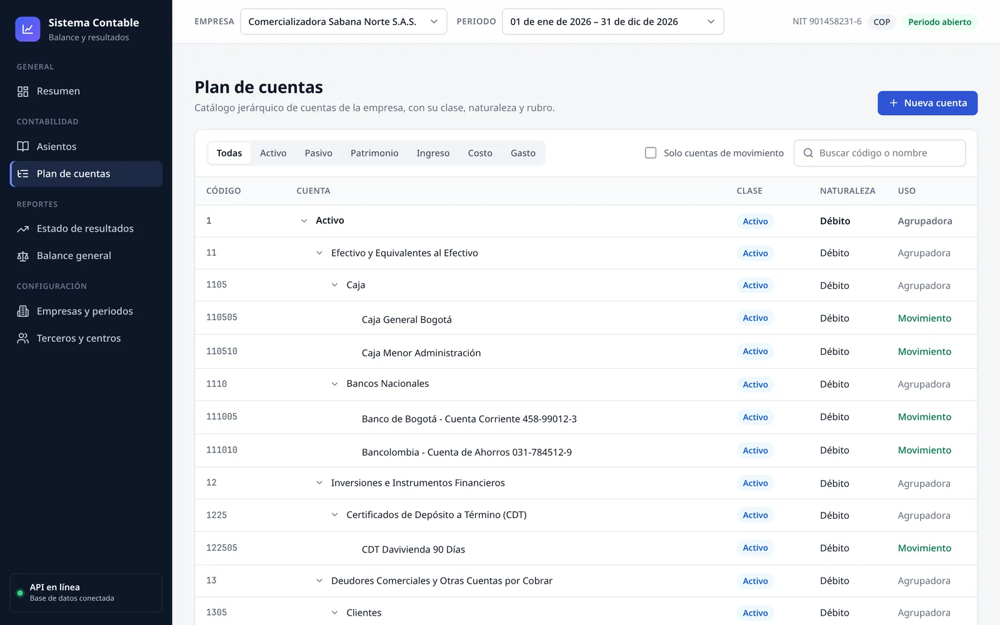
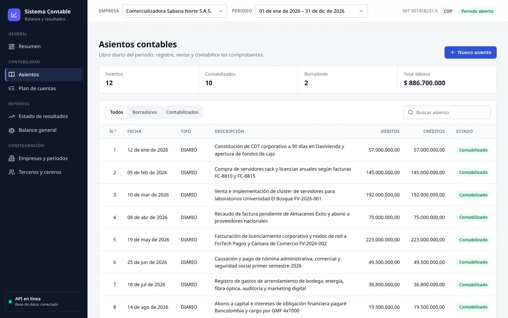
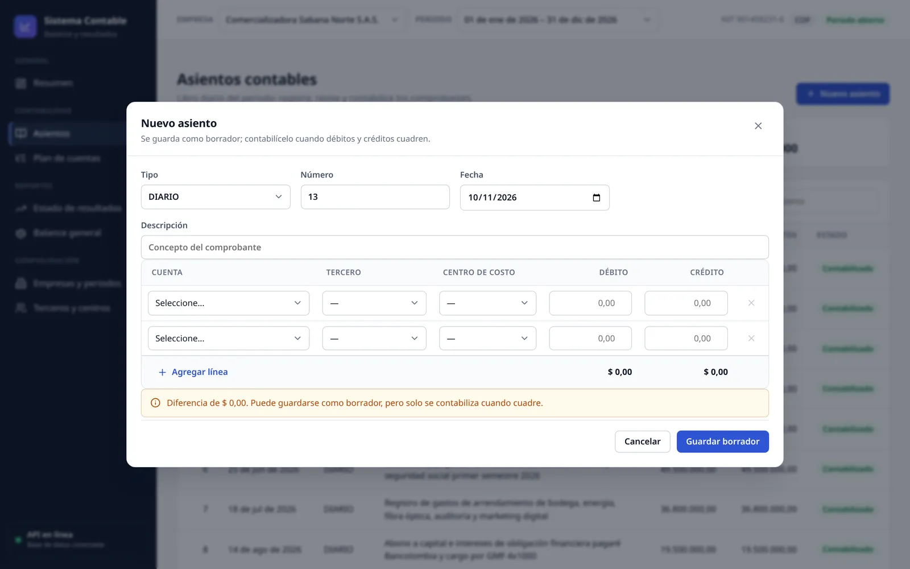
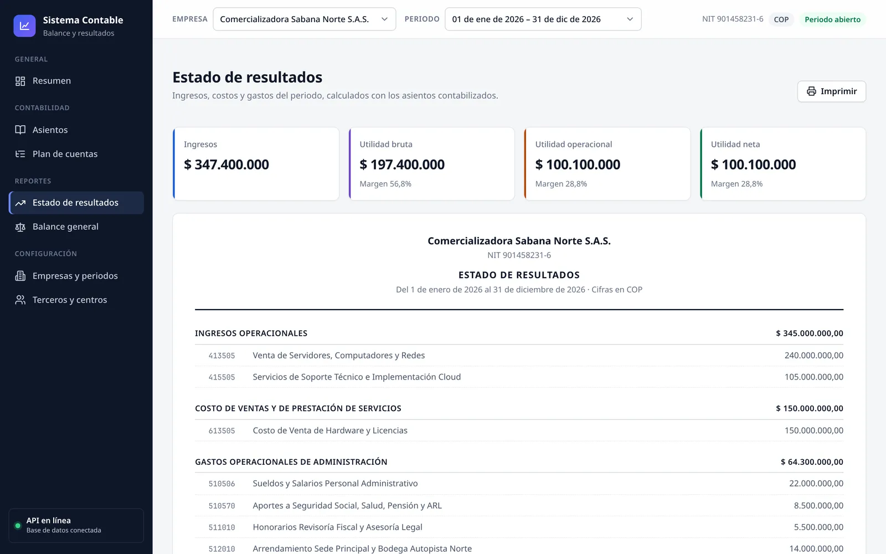
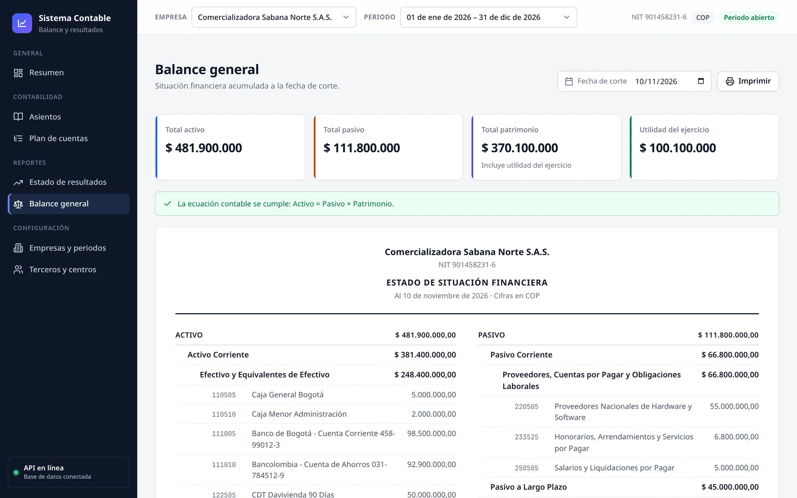
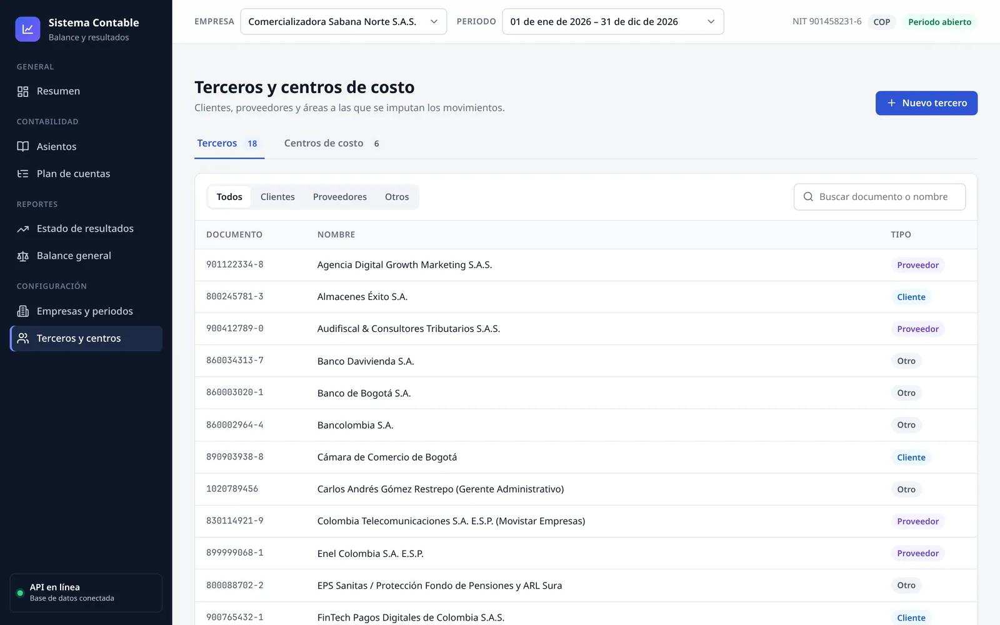
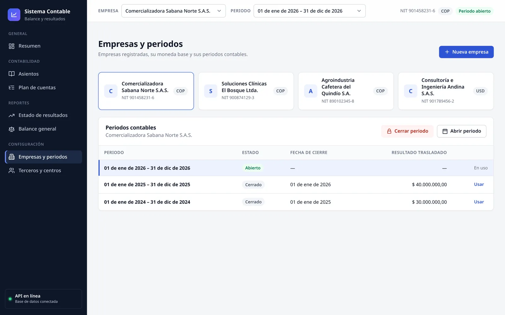

Me encargué de que la base de datos se pudiera usar: la API, la aplicación web, la conexión entre ambas y el despliegue del frontend.
- API sin ORM. Cada consulta está escrita a mano en SQL parametrizado, en un módulo por entidad y con su propósito documentado. Arquitectura por capas: rutas → servicios → repositorios → base de datos.
- Reglas contables también en la API. Partida doble, periodo cerrado, solo cuentas hoja con movimientos y un cierre de periodo atómico. El Balance General y el Estado de Resultados se calculan en el momento, no se guardan.
- Aplicación web en Angular con Atomic Design: plan de cuentas como árbol, registro y contabilización de asientos, terceros, empresas y periodos, y los dos estados financieros.
- Despliegue del frontend en VM-Front con Nginx, publicaciones versionadas para poder volver atrás, firewall y fail2ban.
La aplicación







